结构式
结构式（英语：Structural Formula），表示分子的空间结构，表示有机化合物一般用结构简式或键线式（一般省去碳氢键，有时也省去碳碳单键，用折线表示）。
C2H6乙烷的结构简式是CH3CH3。（碳有-1，-2，-3，-4，0，+1，+2，+3，+4化合价）
键线式（英语：Skeletal formula），也称骨架式、拓扑式、折线简式，是在纸面表示分子结构的一种方法，在表示有机化合物的立体结构时尤其常用。用键线式表示的结构简明易懂，并且容易书写。
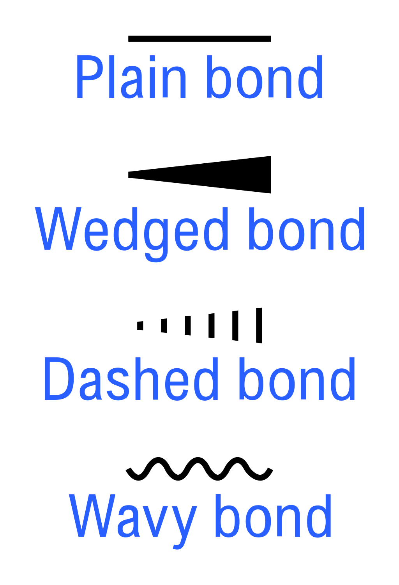
- 反应物属于对映异构体之一时，需要将其立体化学特征表现出来。
- 实线代表位于平面上的键
- 楔形线表示向上伸出纸面，朝向观察者的键
- 虚线代表向下伸出纸面，远离观察者的键
- 波形线代表键可以处于上述两种位置之一，即分子为外消旋混合物或键的立体特征不明。
胆固醇概况
胆固醇(cholesterol)别名胆甾(zāi)醇，是一种类固醇（类甾醇、甾体、甾族化合物）及固醇（甾醇sterol）。
甾醇的结构式如下所示。
胆固醇化学式为C27H46O，是固态、无色的结晶，结构如下所示。
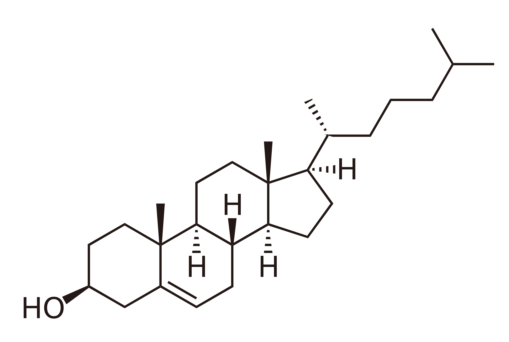
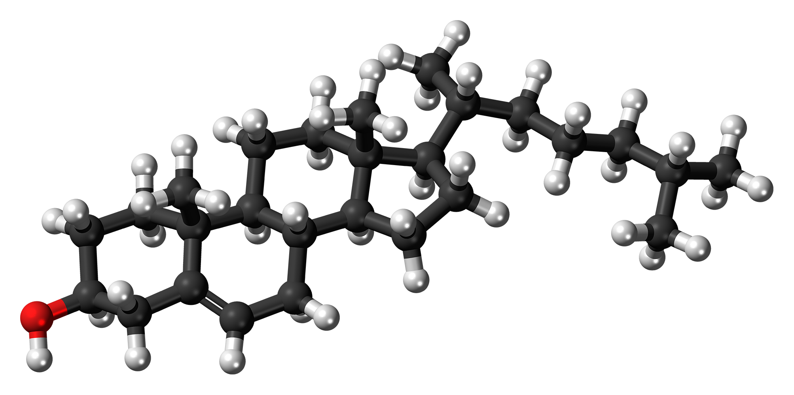
胆固醇由一个法国医生于1784年在胆结石发现。其英文命名 cholesterol 为希腊文的chole-（胆汁）加上 stereos（固体），再加上其化学结构中有羟基，故再接上 -ol 在结尾。
胆固醇广泛存在于动物体的细胞膜（被用来保持细胞膜的强度及流动性，也可以被用来调节细胞膜强度流动性以改变细胞膜形状和让细胞膜流动），同时也是合成几种重要固醇类激素及胆酸（胆汁的重要成分）的前置材料。当阳光晒到皮肤，皮下的胆固醇会变成维生素D 。若血液中胆固醇的总含量过高，则发生心血管疾病的几率会提高。
脂肪和蛋白质
复习一点生物知识，不然下面的看不懂。
脂肪即甘油三酯
脂肪（英语：fat）在营养学、生物学和化学中，通常是指脂肪酸的任何酯，或此类化合物的混合物；最常见的脂肪存在于生物或食物中。
术语“脂肪”常特指甘油三酯(Triglyceride)类（即油脂），它们是一群植物油和动物脂肪组织的主要成分。口语上，脂肪多指室温下呈固态的油脂（室温下呈液态的油脂称作油），多来源于人和动物体内的脂肪组织。
脂肪的化学结构是甘油三酯，均为 1甘油（丙三醇）＋3脂肪酸（非芳香烃类的羧酸）→1甘油三酯（油脂）＋3水。
与糖类不同，脂肪所含的碳、氢的比例较高，而氧的比例较低，所以发热量比糖类高。脂肪组织是绝大多数脊椎动物特有的构造，可以使之一段时间不进食，而不会能量耗竭而死。
酯zhǐ，脂zhī。酯和脂质只是有交集——脂肪广义上是脂肪酸的任何酯，而脂肪属于脂质（脂类），脂质包括脂蛋白等很多其他类物质；酯除了由脂肪酸酯化生成之外也有很多其他羧酸可以和醇合成。
植物性甘油三酯多为“油”，动物性甘油三酯多为“脂”；固、液态的甘油三酯统称为“油脂”。但个别甘油三酯实际上的熔点，取决于其脂肪酸部分的种类：由碳数较少的饱和脂肪酸（椰子油22度以下为固态即熔沸点22CelsiusDegree）或双键的不饱和脂肪酸（花生油）所形成的三酰(xiān, RC＝O)甘油，在常温下多为液体，即称为油（oils）；由碳数较多的饱和脂肪酸所形成的甘油三酯，在常温下多为固体（如牛油、猪油），即称为脂肪（fat）。市上贩售的固态植物奶油是将植物油加氢成为饱和脂肪酸后加上牛奶与人工色素而得。
甘油三酯(Triglyceride)的化学式是CH2COOR-CHCOOR'-CH2COOR"，其中R、R'、R"为烷基（alkyl）长链。三个脂肪酸RCOOH、R'COOH、R"COOH可能为相同、相异或部分相异的烷基。
甘油三酯（triglyceride，TG）又称三甘油酯、三酸甘油酯，俗称油脂，旧称“三酰甘油”（triacylglycerol）、“三酰酰甘油酯”（triacylglyceride，TAG），属于一种中性脂肪，是甘油的 3个羟基分别和 3个脂肪酸分子脱水缩合后，所形成的甘油酯，所以归为酯类有机化合物。脂肪酸的种类繁多，但它们的骨干都是一条由碳组成的“碳链”。碳数在1到5之间的“碳链”被定位为“短链”，碳数在6到12之间的“碳链”被定位为“中链”，碳数在13到21之间的“碳链”被定位为“长链”，而碳数在22以上的“碳链”则被定位为“超长链”。自然界里的甘油三酯的链长差异很大，但是16个、18个和20个碳原子的链最常见。自然界里常见的植物和动物甘油三酯的长链只有双数碳原子的，其原因来自乙酰辅酶A生物合成的过程。天然的脂肪包含许多不同的甘油三酯，因此它们没有固定的熔点，而是有一个非常宽的熔化温度带。可可脂是少数的仅有数种甘油三酯的脂肪，包含棕榈酸、油酸和硬脂酸。因此可可脂的熔点比较固定，导致巧克力在嘴里熔化时没有颗粒的感觉。在细胞里，甘油三酯可以自由穿过细胞膜，原因是其无极性，与组成细胞膜的类脂双层不产生反应。甘油三酯是极低密度脂蛋白和乳糜微粒的主要组成部分，在新陈代谢过程中它作为能源和食物中的脂肪的运输工具起了一个重要的作用。其能量密度为糖类和蛋白质的两倍（9大卡每克）。在小肠内，甘油三酯在脂肪酶和胆汁的作用下被分解为甘油和脂肪酸后进入血管。在血液内它重组，形成脂蛋白的组成部分。它的作用包括向细胞运输脂肪酸。不同的组织可以释放脂肪酸或者吸收脂肪酸作为能源。脂肪细胞可以产生和储藏甘油三酯。假如身体需要脂肪酸作为能源时胰高血糖素会促使脂肪酶分解甘油三酯，释放自由脂肪酸。由于脑无法使用脂肪酸作为能源，甘油三酯中的丙三醇会被转化为葡萄糖供脑作为能源使用，而脂肪酸也可在肝中转化为大脑可利用的酮体。假如脑对葡萄糖的需要大于身体内的含量时，脂肪细胞也会将甘油三酯分解。
上面来自三酸甘油酯wikipedia。
棕榈酸油酸alpha亚麻酸甘油三酯：
Glycerol:
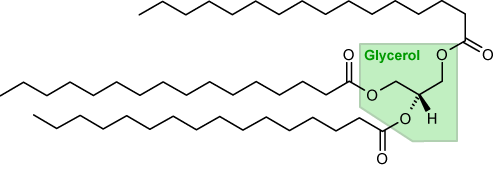
甘油
甘油即丙三醇，1,2,3-丙三醇(propane-1,2,3-triol)。
饱和脂肪酸和不饱和脂肪酸
烃类（tīng又称碳氢化合物hydrocarbon）依其化学性质也可分为脂肪烃及芳香烃两大类，脂肪烃为链烃和脂环烃的合称，芳香烃则是指分子结构中带苯环的烃。另外，芳香烃之环上接有脂肪族者称为脂芳烃。
脂肪酸（英语：fatty acid）是具有一条脂肪族链（aliphatic chain）的羧酸(-COOH, 蛋白质的肽键就是由羧基和氨基脱水缩合而成)，该链可饱和或不饱和；亦即脂肪酸是由碳氢组成的烃类基团连结羧基所构成。大多数天然脂肪酸骨架属无分支链，由4到28个偶数个碳原子组成。
饱和脂肪酸（saturated fatty acid）：烃类基团是全由单键构成的烷烃基。所谓不饱和就是存在碳碳双键，饱和就是跟碳原子结合的氢原子达到最大值。
细胞结构所含脂肪的不饱和程度越高（双键数量越多），越容易受外来自由基破坏，其过氧化的可能性越高。不饱和脂肪酸虽然保存不好容易腐败，性质不稳定，但除了反式不饱和脂肪酸（通常是人造脂肪，性质稳定，但容易导致心血管疾病，对人害处很大）外多是对人体有好处的，比如ω-3脂肪酸。碳链越长(中链MCT饱和脂肪酸不同)，熔沸点、燃点越高，动物性食物中以长链饱和脂肪酸为主，常温下呈固态，通常碳数较少或碳链不饱和的植物脂肪酸常温下就为液态。**通常动物油都有较高比例的饱和脂肪酸，植物油的天然不饱和脂肪酸比例较高。**
单(元)不饱和脂肪酸（monounsaturated fatty acid）：烃类基团是包含一个碳-碳双键的烯烃基。天然脂肪的双键均为正式（cis，双键两侧的基团偏向一个方向），未加工食品所含的天然油脂里的脂肪酸大部分是顺式结构。至于天然形成的反式脂肪 -- 主要存在于例如牛和羊一类的反刍动物的脂肪和乳汁里头。脂肪酸中如果只有一个双键，则称为单元不饱和脂肪酸，包含油酸；单元不饱和脂肪酸相对稳定，也有利于预防心血管疾病。
多(元)不饱和脂肪酸（polyunsaturated fatty acid）：烃类基团是包含多个碳-碳双键的烯烃基。
| 不同的脂肪酸的分子结构图 | ||
|---|---|---|
| 饱和脂肪酸（ 硬脂酸 ） | “顺式”不饱和脂肪酸（ 油酸 ） | “反式”不饱和脂肪酸（ 反油酸 ） |
|
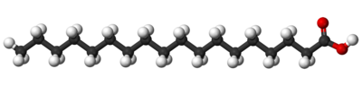 |
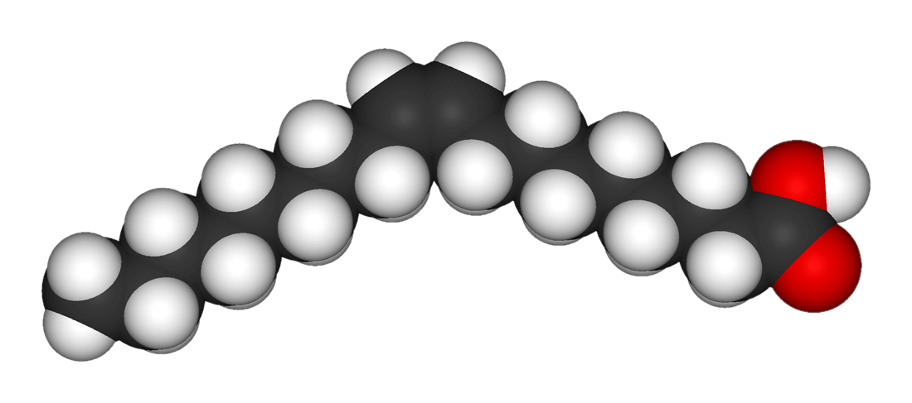 |
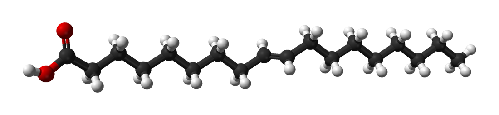 |
|
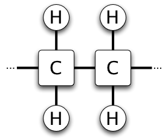 |
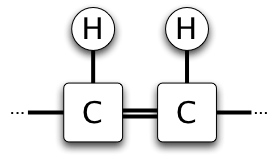 |
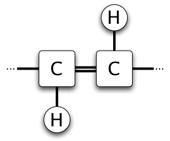 |
| 饱和的碳原子以单键连接。 | 不饱和的碳原子以双键连接，“顺式”结构。 | 不饱和的碳原子以双键连接，“反式”结构。 |
关于球棍模型(ball-and-stick model)的棍子长度，根据wikipedia，确实会表示原子间的距离。
In a good model, the angles between the rods should be the same as the angles between the bonds, and the distances between the centers of the spheres should be proportional to the distances between the corresponding atomic nuclei. The chemical element of each atom is often indicated by the sphere's color.
碳链长度
碳链越长，分子间的相互作用力就越大，就需要越多的能量使分子活动起来，所以熔沸点就会越高。
碳链越长，分子的碳碳键就越弱，碳碳键就越容易被打断，所以分子就越容易分解。
熔沸点的高低与是否容易分解没什么必然关系。熔沸点是破坏分子间作用力，分解是破坏化学键。当物质获得的能量大于破坏化学键的能量是就会分解，若此温度小于破坏其分子间作用力的能量，此物质就会分解而不会熔融或沸腾。（参考百度）
蛋白质
蛋白质（英语：protein）旧称“朊”，是生物高分子，它由一个或多个由α-氨基酸残基（residue，聚合在大分子里少了原氨基酸的一部分所以叫残基）组成的长链条组成。（高分子即大分子，是至少1000个原子通过共价键连接而成的化合物）
下图是蛋白质结构中氨基酸和丙氨酸通过肽键（用方块标出）连接在一起。
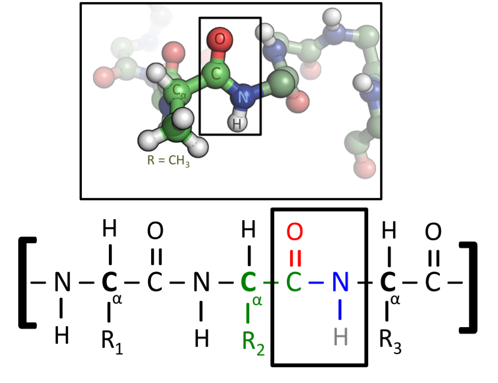
丙氨酸(Alanine /ˈæləniːn/, 缩写Ala, A)的化学式是C3H7NO2。
DNA和RNA和GENE
DNA(deoxyribonucleic acid, 脱氧核糖核酸)是一种脱氧核苷酸(nucleotide /ˈnjuːkliːətaɪd/)聚合成的生物大分子，主要功能是信息储存（蓝图）。其中包含的指令，是建构细胞内其他的化合物，如蛋白质与核糖核酸所需。带有蛋白质编码的DNA片段（外显子，大部分生物还有内含子）称为基因（内含子加外显子）。其他的DNA序列，有些直接以本身构造发挥作用，有些则参与调控遗传信息的表现。
下图中5端是5号碳(磷酸那边)未与另一个核苷酸结合的末端；3端是3号碳(羟基或者说碱基那边)未与另一个核苷酸结合的那一端。
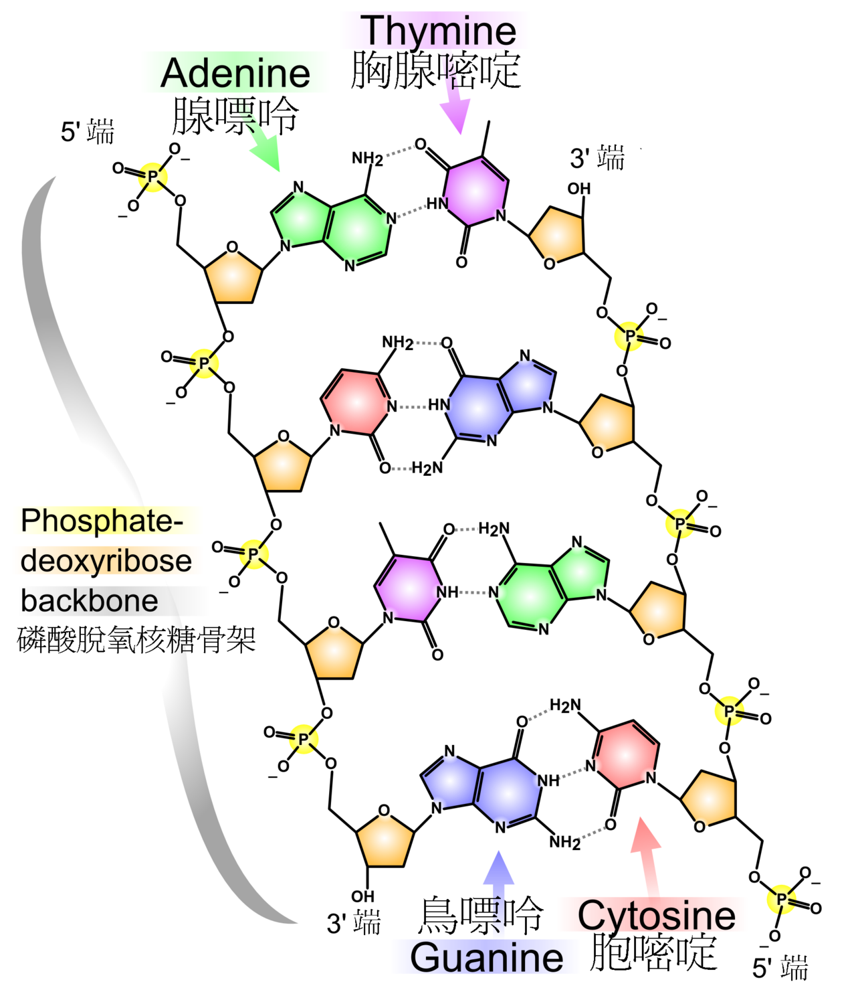
RNA(ribonucleic acid, 核糖核酸)，是一类由核糖核苷酸(nucleotide /ˈnjuːkliːətaɪd/)聚合成的生物大分子。自然界中的RNA通常是单链的，DNA存在于细胞核，RNA存在于细胞质。
mRNA（传讯RNA）为遗传讯息的传递者，它能够指导蛋白质的合成。因为mRNA有编码蛋白质的能力，它又被称为编码RNA。而其他没有编码蛋白质能力的RNA则被称为非编码RNA（ncRNA）。它们经由催化生化反应，或透过调控或参与基因表达过程发挥相应的生理功能。比如，tRNA（转运RNA）在翻译过程中起转运RNA的作用，rRNA（核糖体RNA）于翻译过程中起催化肽链形成的作用，sRNA（小RNA）起到调控基因表达的作用。此外，RNA病毒甚至以RNA作为它们的遗传物质。
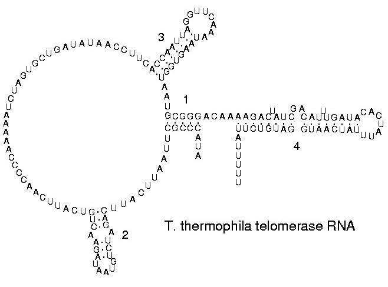
内含子和外显子
内含子是一个基因中非编码DNA片段，UTR(untranslated region)是非翻译区也是起点终点标志，5'和3'都跟上面三端五端是一回事，Intron是内含子，Exon是外显子。
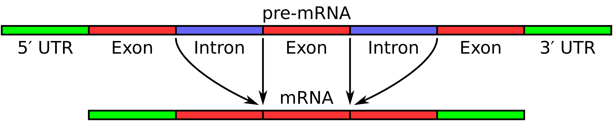
有机物
有机化合物（德语：Organische Verbindung；英语：organic compound、organic chemical），简称有机物，是一定含碳的化合物。但有少数含碳化合物属于无机化合物，主要有以下三类：碳氧化物（如一氧化碳、二氧化碳）、碳酸盐类及氰化物（qíng，是特指带有氰离子（CN−）或氰基（–CN）的化合物，叁键）。
烃类包括烷烴、烯烴、炔烴及芳香烴都是有机化合物，比如甲烷CH4。
脂肪酸代谢
https://www.youtube.com/watch?v=iJEyTtBNoPI
catabolism分解代谢, anabolism合成代谢, metabolism代谢.
glycerol/ˈɡlɪs.ə.rɒl/, 甘油丙三醇, 1872, from glycerine + -ol, suffix denoting alcohols.
glycerin is the common or commercial name of glycerol, which contains mostly 95% of glycerol, which is not pure.
glyceride is compound of glycerol and organic acids, 1864; see glycerin + -ide.
triglyceride/traɪˈɡlɪs.ə.raɪd/, 三酰甘油. A triglyceride (TG, triacylglycerol, TAG, or triacylglyceride) is an ester(/ˈes.tər/, 酯) derived from glycerol and three fatty acids (from tri- and glyceride). triacylglycerols, = tri + acyl(/ˈeɪsʌɪl/, 酰) + glycerol(丙三醇).
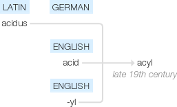
https://www.etymonline.com/word/-yl chemical suffix used in forming names of radicals, from French -yle, from Greek hylē "wood," also "building stuff, raw material" (from which something is made), of unknown origin.
lipid, 脂质, "organic substance of the fat group," 1925, from French lipide, coined 1923 by G. Bertrand from Greek lipos "fat, grease" (see lipo-) + chemical suffix -ide.
https://www.etymonline.com/word/-ide word-forming element used in chemistry to coin names for simple compounds of one element with another element or radical; originally abstracted from oxide, which was the first so classified, in which the -ide is from acide "acid."
saccharine /ˈsæk.ər.iːn/ (adj.) 1670s, "of or like sugar, having the qualities of sugar," from Medieval Latin saccharum "sugar," from Latin saccharon "sugar," from Greek sakkharon, from Pali (古印度语言巴利语) sakkhara, from Sanskrit (/ˈsæn.skrɪt/梵语) sarkara "gravel, grit" (see sugar). The metaphoric (/ˌmet.əˈfɒr.ɪ.k/隐喻) sense of "overly sweet" is recorded by 1841. For the sugar substitute, see saccharin (代糖？).
saccharide, saccharine + ide.
sugar, from Old French sucre.(12c.)
polysaccharide/ˌpɒl.ɪˈsæk.ər.aɪd/, 多糖.
monosaccharides/ˌmɒn.əʊˈsæk.ər.aɪd/, 单糖.
https://www.etymonline.com/word/mono- word-forming element of Greek origin meaning "one, single, alone; containing one (atom, etc.)," from Greek monos "single, alone," from PIE root *men- (4) "small, isolated."
glucose/ˈɡluː.kəʊs/, 葡萄糖, name of a group of sugars (in commercial use, "sugar-syrup from starch"), 1840, from French glucose (1838), said to have been coined by French professor Eugène Melchior Péligot (1811-1890) from Greek gleukos "must, sweet wine," related to glykys "sweet" (see gluco-). It first was obtained from grape sugar.
https://www.etymonline.com/word/gluco- before vowels (/vaʊəl/元音), gluc-, word-forming element used since c. 1880s, a later form of glyco-, from Greek glykys "sweet," figuratively "delightful; dear; simple, silly," from glku-, a dissimilation in Greek from PIE root dlk-u- "sweet" (source also of Latin dulcis). De Vaan writes that "It is likely that we are dealing with a common borrowing from an unknown source." Now usually with reference to glucose.
https://www.etymonline.com/word/glyco- before vowels glyc-, word-forming element meaning "sweet," from Latinized combining form of Greek glykys, glykeros "sweet" (see gluco-). Used in reference to sugars generally. OED says a regular formation would be glycy-.
gluc和gluco是glyc和glyco较新的形式。
glycolysis/ɡlʌɪˈkɒlɪsɪs/, 醣酵解, 1891, from French; see glyco- + -lysis. 又叫糖解，醣解（正體字：在一般情況下，單醣和雙醣是較小的（低分子量）的碳水化合物，通常稱為糖）。
gluconeogenesis(formation of new sugar)糖质新生(GNG), gluco-neo(new)-genesis, Old English Genesis from Latin genesis "generation, nativity".
glyceraldehyde/ˌɡlɪsə'rældəhaɪd/-3-phosphate/ˈfɒs.feɪt/, 甘油醛-3-磷酸盐. glyceraldehyde-3-phosphate甘油醛3-磷酸.
pyruvate/paɪˈruvet/, n. [化]丙酮酸盐；[化]丙酮酸酯, pyr(o)– + Latin ūva, grape (from its being produced by the dry distillation of racemic acid, originally derived from grapes) + -ate.
pyro-, before vowels pyr-, word-forming element form meaning "fire," from Greek pyr (genitive pyros) "fire, funeral fire," also symbolic of terrible things, rages, "rarely as an image of warmth and comfort" [Liddell & Scott], from PIE root paewr- "fire." Pyriphlegethon, literally "fire-blazing," was one of the rivers of Hell. -ate, in chemistry, word-forming element used to form the names of salts from acids in -ic; from Latin -atus, -atum, suffix used in forming adjectives and thence nouns; identical with -ate(word-forming element used in forming nouns from Latin words ending in -atus, -atum (such as estate, primate, senate)). https://www.etymonline.com/word/uvula uva "grape," from PIE root og- "fruit, berry." uvula/ˈjuː.vjə.lə/
Acetyl-CoA, acetyl/'æsɪtaɪl/乙酰, as a carrier of acyl groups, is an essential cofactor. 乙酰辅酶A
nucleic/nju:'kli:ik/, 核的, "referring to a nucleus," 1892, in nucleic acid, which is a translation of German Nukleinsäure (1889), from Nuklein "substance obtained from a cell nucleus" (see nucleus + -in) + -ic.
nucleotide/ˈnjuːkli.oʊ.taɪd/, type of chemical compound forming the basic structural unit of a nucleic acid, 1908, from German nucleotid (1907), from nucleo-, modern combining form of Latin nucleus (see nucleus) + -ide, with -t- for the sake of euphony (/ˈjuː.fə.ni/悦耳).
https://www.etymonline.com/word/nucleus 1704, "kernel of a nut;" 1708, "head of a comet;" from Latin nucleus "kernel," from nucula "little nut," diminutive of nux (genitive nucis) "nut," from PIE *kneu- "nut" (source also of Middle Irish cnu, Welsh cneuen, Middle Breton knoen "nut," Old Norse hnot, Old English hnutu "nut").
amino/ə'miːnəʊ/, 氨基1887 as an element in compound words in chemistry, from combining form of amine. Amino acid is attested from 1898.
citric/ˈsɪt.rɪk/, related to citrus/ˈsɪt.rəs/ (= fruit that contains acid and has a lot of juice). 中文跟英文不太一样，中文是柠檬的，英文是酸的多汁水果，总之是柠檬酸, =citrus + -ic.
citrus/ˈsɪt.rəs/, any tree of the genus Citrus, or its fruit, 1825, from the Modern Latin genus name, from Latin citrus "citron tree," the name of an African tree with aromatic (/ˌær.əˈmæt.ɪk/, 芳香化合物Aromatic compounds也用的是这个aromatic) wood and lemon-like fruit, the first citrus fruit to become available in the West. 来源不确定，有的说来自希腊kedros "cedar"雪松.
oxidize/ˈɒk.sɪ.daɪz/, 氧化, 使生锈氧化, = oxide + -ize, "compound of oxygen with another element," 1790, from French oxide (1787), coined by French chemists Louis-Bernard Guyton de Morveau and Antoine Lavoisier from ox(ygène) (see oxygen) + (ac)ide "acid" (see acid (n.)).
oxidative phosphorylation, oxidative/'ɔksideitiv/氧化的, phosphorylation/fɔ,sfɔri'leiʃən/磷酸化作用.
https://www.etymonline.com/word/oxygen gaseous chemical element, 1790, from French oxygène, coined in 1777 by French chemist Antoine-Laurent Lavoisier (1743-1794), from Greek oxys "sharp, acid" (from PIE root *ak-"be sharp, rise (out) to a point, pierce") + French -gène "something that produces" (from Greek -genēs "formation, creation;" see -gen).
https://www.etymonline.com/word/phosphorus 磷phosphorus/'fɒsf(ə)rəs/! 跟光合一样有词素phos-光+phorus(to carry)，磷化氢燃烧的火叫鬼火，白磷黑暗中能发光且35度以上就能在大气中自燃，白磷隔除空气加热至250度可得红磷，还有黑磷和紫磷，磷(P, 15)是有趣的，比如能量三磷酸腺苷。
1640s, "substance or organism that shines of itself," from Latin phosphorus "light-bringing," also "the morning star" (a sense attested in English from 1620), from Greek Phosphoros "morning star," literally "torchbearer," from phōs "light," contraction of phaos "light, daylight" + phoros "bearer(递送者，持有者)" from pherein "to carry".
synthesis合成.
photosynthesis/ˌfəʊ.təʊˈsɪn.θə.sɪs/, 光合作用, word-forming element meaning "light" or "photographic" or "photoelectric," from Greek photo-, combining form of phōs (genitive phōtos) "light" (from PIE root *bha- "to shine").
METABOLISM. 课程slide里的图找不到，这个图跟slide里的画风不太一样且中轴线对称。

中间的是糖类，多糖到单糖到糖解得到丙酮酸pyruvate进而得到乙酰辅酶A，然后进行柠檬酸循环，生成还原型辅酶，进入最下面的电子传递系统。两边分别是蛋白质和脂质。
脂肪酸要氧化代谢也要转换成乙酰辅酶A，脂肪酸是接近完全还原状态的生物分子，所以要经过氧化代谢作用再氧化分解。
在重要的地方，比如肝细胞，没有被用到ATP反应的乙酰辅酶A会用来合成ketone body，酮体是肝脏脂肪酸氧化分解的中间产物乙酰乙酸、β-羟基丁酸及丙酮三者统称。酮体和酮酸是替代葡萄糖的能量物质。在肌肉细胞就不会合成，因为基本都用作能量合成了。
他叫这玩意乙烯基辅酶A？
与氧化合或失去氢(或称加氧去氢)的反应称为氧化；把与氢化合或失去氧(或称加氢去氧)的反应称为还原。氧化还原反应的本质是电子的得失或共用电子对的偏移。
所谓的脂肪酸的alpha, beta, omega氧化，就是在alpha, beta, omega三个碳上氧化，氧化实际上就是脱氢生成酮(CO double bond)，之后又会在这个CO double bond上切割，beta氧化切割下来的就是醋酸(乙酸（英語：ethanoic acid）又稱醋酸（英語：acetic acid），CH3COOH有机一元酸和短鏈饱和脂肪酸，為食醋酸味及刺激性氣味的來源)。
Greek letters are also sometimes used to denote positions relative to the carboxyl carbon. The following diagram illustrates how Greek letters are used to denote positions relative to either end of a fatty acid chain.
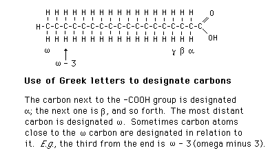
- The first carbon following the carboxyl carbon is the alpha carbon.
- The second carbon following the carboxyl carbon is the beta carbon.
- The last carbon in the chain, farthest from the carboxyl group, is the omega carbon.
一般酰基（蓝色），酰基离子（顶部中央），酰基自由基（右上），酮（左上），醛（左下），酯（底部中央），酰胺（右下）。 （R1，R2，R3：有机取代基或氢）。
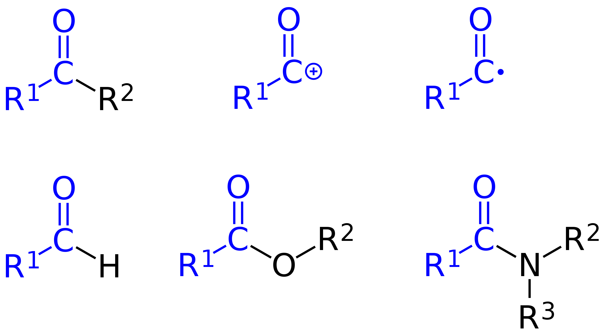
胆固醇代谢
脂肪酸代謝 (Fatty acid metabolism)，发现了好东西。
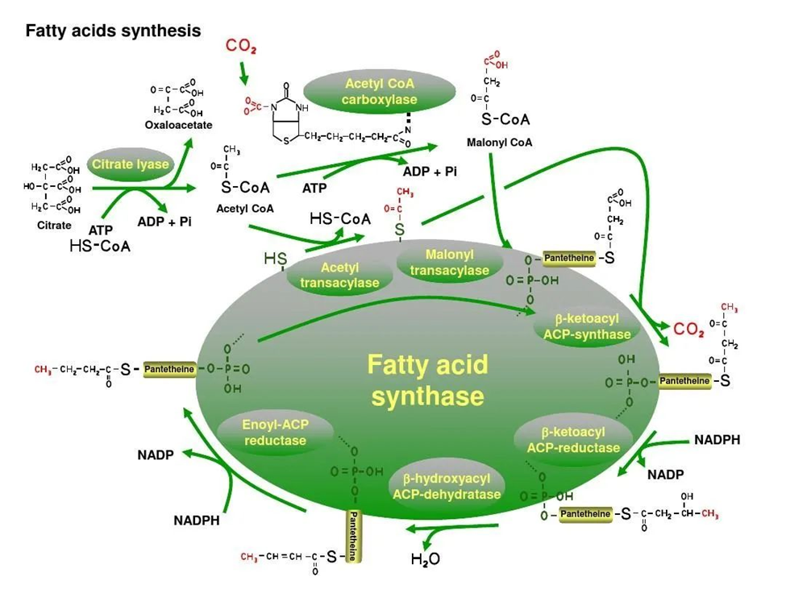
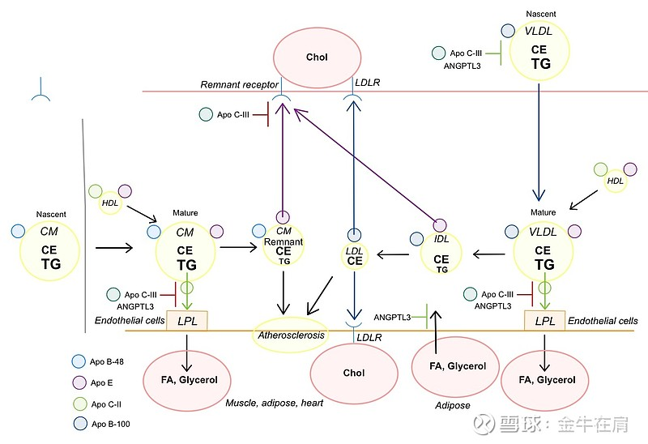
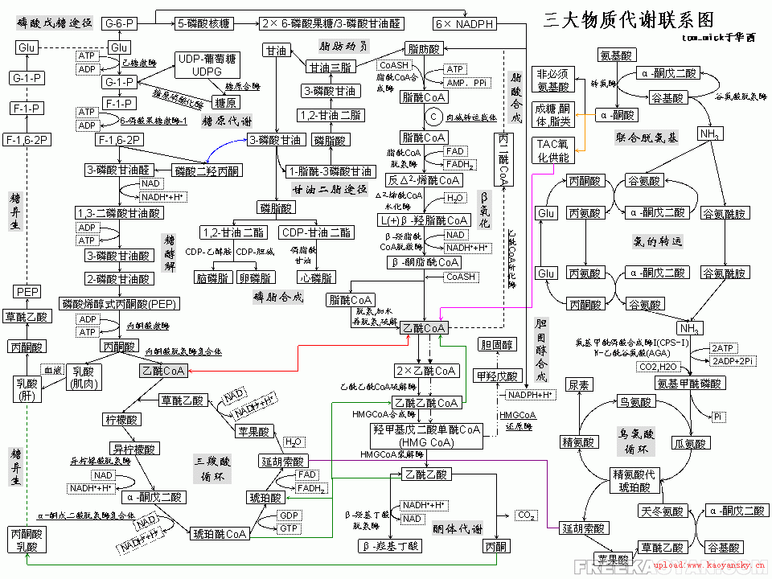
[因为讨论胆固醇就不得不完全理解脂肪，胆固醇就是在十二指肠被胰脂酶分解为脂肪酸后，又在肝脏用脂肪酸合成的。]
catabolism
申请wikipedia权限。
2023年狂欢gap了一年，好像没有读完任何一本书。